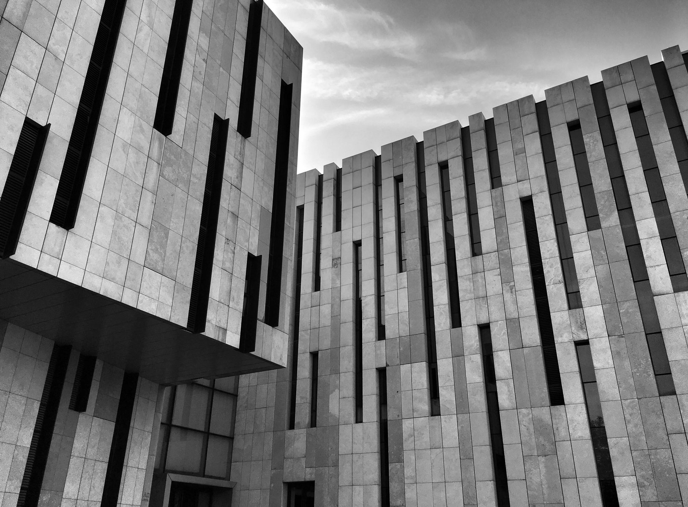
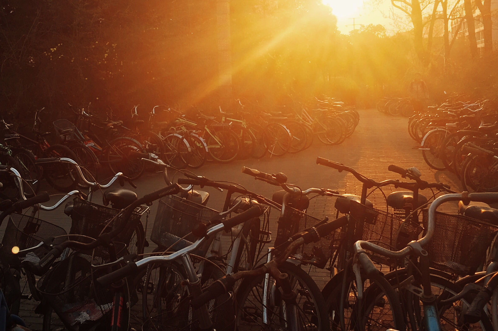
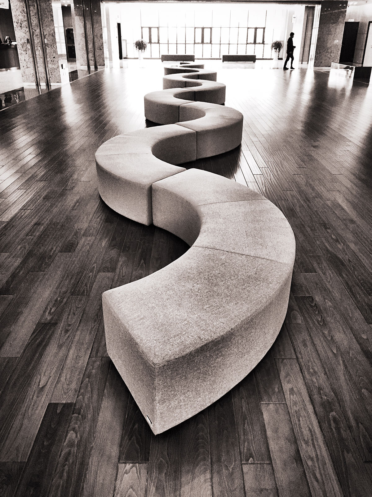
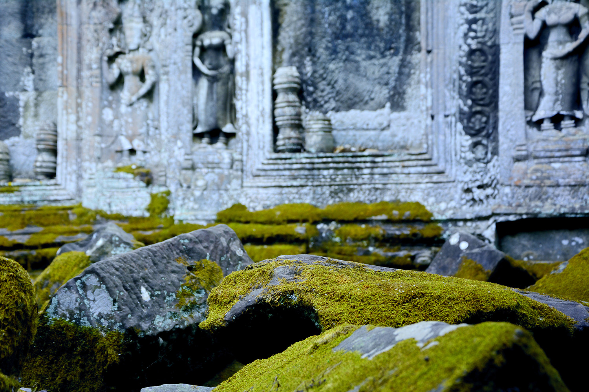
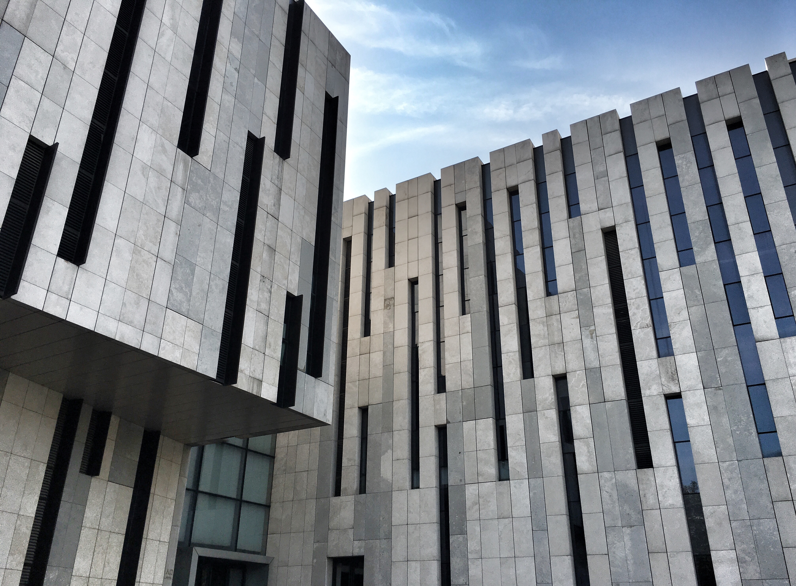
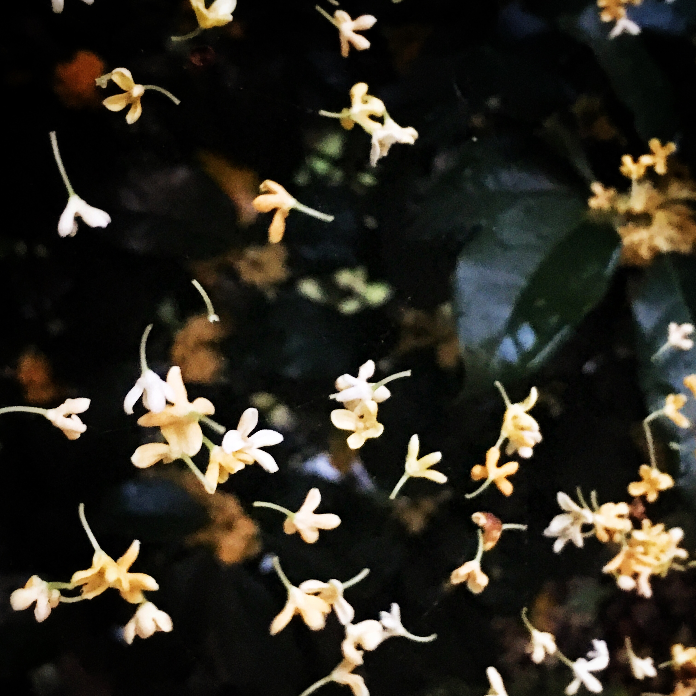
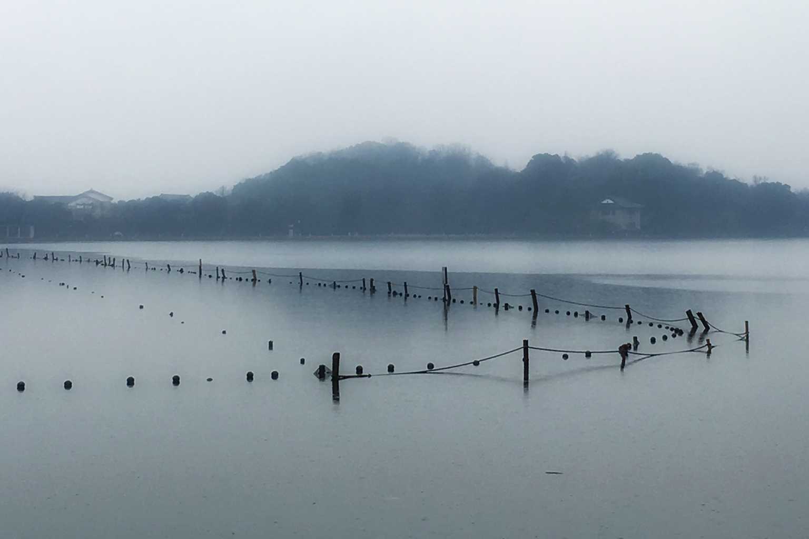
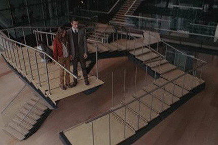
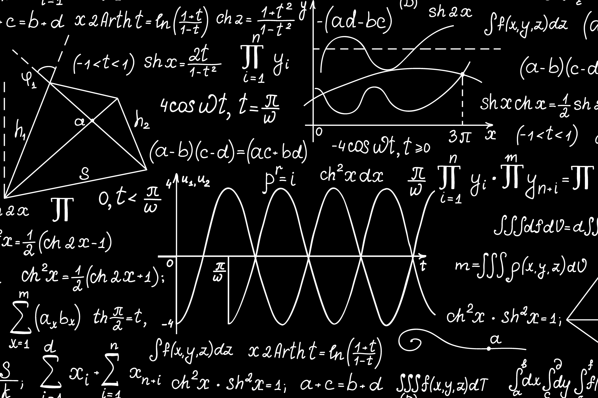

夕阳2016年3月24日傍晚。摄于南理工东南角。

蜿蜒2017年1月14日。南京理工大学图书馆。
2016年12月10日。南京栖霞山。
使用Prisma。

寺庙2017年1月29日。柬埔寨吴哥窟。

江苏美术馆2015年10月31日。摄于江苏省美术馆。
本网站封面图片。

离散2016年10月19日。杭州。
被蜘蛛网悬挂着的桂花。


荷兰插画师M.C.Escher有一幅著名的画作，画的是一个封闭循环的楼梯，级级盘旋而上，一周之后又回到起点，被称为不可能的楼梯，也叫《The Infinite Staircase（无尽楼梯）》。
这个楼梯在《盗梦空间》中被还原（电影第40分钟，Ariadne在Arthur梦里）。电影通过这个楼梯揭示了梦里空间循环错杂并且渺无边际的特性，也指出了梦中空间悖论的存在。如果从铺垫上看，观众可能会以为这个楼梯会在之后的电影情节里派上大用场，但实际上，这样的空间悖论只在Arthur解决掉一个投影的防御者时才用到。笔者认为，这个楼梯的用途绝不仅仅是场景的前后呼应，它应有更深刻的意义。
